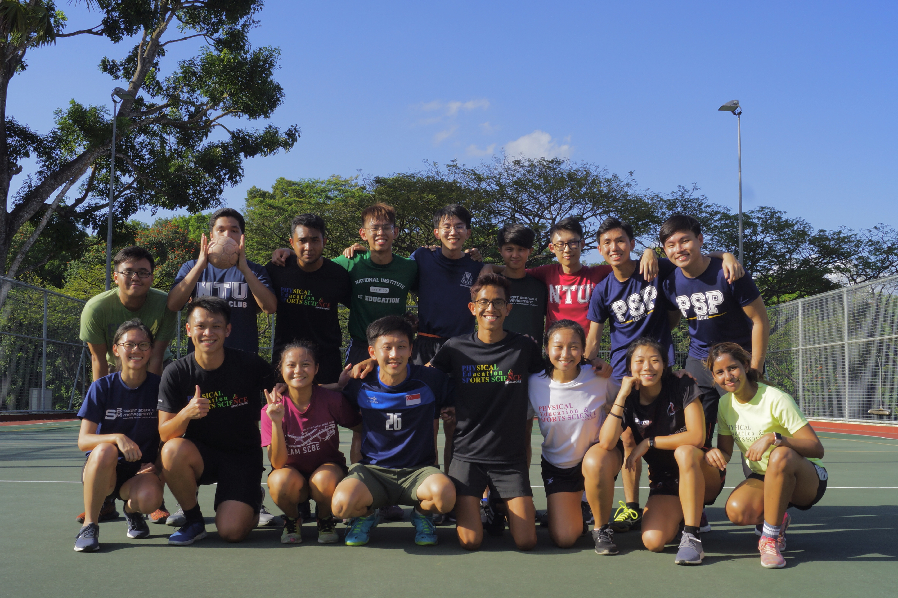
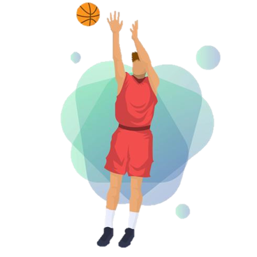
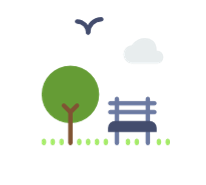

Outdoor Courts


O U T D O O R
C O U R T S
Description
Number of Outdoor Basketball Courts: 3
Number of Outdoor Tennis Courts: 4
Number of Handball Court: 1
Number of Outdoor Badminton Courts: 2
The Sports Block has a myriad of outdoor courts that many student teachers are unaware of.
These outdoor facilities are usually left unlocked and can be used by NIE staff and student teachers.
In the event that you visit the Indoor Sports Hall to only realise that the Hall is fully occupied,
do consider using the outdoor courts to play sports and exercise as well!

A C T I V I T I E S
The Outdoor Courts provides you with the opportunity to play tennis, basketball and even handball with your peers!
The PESS Club has conducted Handball workshops for you to learn more about the rules of the game and
if you wish to take a break from sports, you can even learn to conduct outdoor cooking at the sides of the outdoor badminton courts.